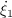
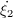
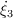

Example 1.5 (vehicle following a track with boundaries) Consider a vehicle modeled by a Dubins vehicle model traveling along a given track with state vector x = [ξ1,ξ2,ξ3]⊤ with dynamics given by  = ucosξ3,  = usinξ3, and  = -ξ3 + r(q). The input u is the tangential velocity of the vehicle, ξ1 and ξ2 describe the vehicle’s position on the plane, and ξ3 is the vehicle’s orientation angle. Also consider a switching controller attempting to keep the vehicle inside the boundaries of a track given by {(ξ1,ξ2) : -1 ≤ ξ1 ≤ 1}. A state q ∈{1,2} is used to define the modes of operation of the controller. When q = 1, the vehicle is traveling to the left, and when q = 2, the vehicle is traveling to the right. A logic variable r is defined in order to steer the vehicle back inside the boundary. The state of the closed-loop system is given by x := [ξ⊤ q]⊤. A model of such a closed-loop system is given by
![⌊ ⌊ ⌋ ⌋
ucos(ξ3) {
f(x,u) := || ⌈ usin(ξ3) ⌉ ||, r(q) := 3π4- if q = 1 (1)
⌈ - ξ3 + r(q) ⌉ π4 if q = 2
u
C := { (ξ,u) ∈ ℝ3 × {1,2} × ℝ | (ξ1 ≤ 1,q = 2) or (ξ1 ≥ - 1,q = 1)}, (2)
( [ ]
||{ ξ if ξ1 ≤ - 1, q = 1
g(ξ,u) := [2] , (3)
||( ξ if ξ1 ≥ 1, q = 2
{ 1 }
D := (ξ,u) ∈ ℝ3 × {1,2} × ℝ | (ξ1 ≥ 1,q = 2) or (ξ1 ≤ - 1,q = 1) (4)](Example_1_53x.png)
The MATLAB scripts in each of the function blocks of the implementation above are given as follows. The tangential velocity of the vehicle is chosen to be u = 1, the initial position on the plane is chosen to be (ξ1,ξ2) = (0,0), and the initial orientation angle is chosen to be ξ3 = radians.
Flow map
1 function xdot = f(x, u)
2
3 %%%%%%%%%%%%%%%%%%%%%%%%%%%%%%%%%%%%%%%%%%%%%%%%%%%%%%%%%%%%%%%%%%%%%%%%%%%
4 % Matlab Function Author: Ricardo Sanfelice
5 %
6 % Project: Simulation of a hybrid system (Vehicle Traveling on a Track)
7 %
8 % Name: f.m
9 %
10 % Description: Flow map
11 %
12 % Version: 1.0
13 % Required files: -
14 %%%%%%%%%%%%%%%%%%%%%%%%%%%%%%%%%%%%%%%%%%%%%%%%%%%%%%%%%%%%%%%%%%%%%%%%%%%
15
16 xtemp = zeros(4,1);
17 xtemp = x;
18 x = xtemp;
19
20 % state
21 xi1 = x(1); %x-position
22 xi2 = x(2); %y-position
23 xi3 = x(3); %orientation angle
24 q = x(4);
25
26 % q = 1 --> going left
27 % q = 2 --> going right
28
29 if q == 1
30 r = 3⋆pi/4;
31 elseif q == 2
32 r = pi/4;
33 else
34 r = 0;
35 end
36
37 % flow map: xidot=f(xi,u);
38 xi1dot = u⋆cos(xi3); %tangential velocity in x-direction
39 xi2dot = u⋆sin(xi3); %tangential velocity in y-direction
40 xi3dot = -xi3 + r; %angular velocity
41 qdot = 0;
42
43 xdot = [xi1dot;xi2dot;xi3dot;qdot];
Flow set
1 function v = C(x, u)
2
3 %%%%%%%%%%%%%%%%%%%%%%%%%%%%%%%%%%%%%%%%%%%%%%%%%%%%%%%%%%%%%%%%%%%%%%%%%%%
4 % Matlab Function Author: Ricardo Sanfelice
5 %
6 % Project: Simulation of a hybrid system (Vehicle Traveling on a Track)
7 %
8 % Name: C.m
9 %
10 % Description: Flow set
11 %
12 % Version: 1.0
13 % Required files: -
14 %%%%%%%%%%%%%%%%%%%%%%%%%%%%%%%%%%%%%%%%%%%%%%%%%%%%%%%%%%%%%%%%%%%%%%%%%%%
15
16 xtemp = zeros(4,1);
17 xtemp = x;
18 x = xtemp;
19
20 % state
21 xi1 = x(1); %x-position
22 xi2 = x(2); %y-position
23 xi3 = x(3); %orientation angle
24 q = x(4);
25
26 % q = 1 --> going left
27 % q = 2 --> going right
28
29 if ((xi1 < 1) && (q == 2)) || ((xi1 > -1) && (q == 1)) % flow condition
30 v = 1; % report flow
31 else
32 v = 0; % do not report flow
33 end
Jump map
1 function xplus = g(x, u)
2
3 %%%%%%%%%%%%%%%%%%%%%%%%%%%%%%%%%%%%%%%%%%%%%%%%%%%%%%%%%%%%%%%%%%%%%%%%%%%
4 % Matlab Function Author: Ricardo Sanfelice
5 %
6 % Project: Simulation of a hybrid system (Vehicle Traveling on a Track)
7 %
8 % Name: g.m
9 %
10 % Description: Jump map
11 %
12 % Version: 1.0
13 % Required files: -
14 %%%%%%%%%%%%%%%%%%%%%%%%%%%%%%%%%%%%%%%%%%%%%%%%%%%%%%%%%%%%%%%%%%%%%%%%%%%
15
16 xtemp = zeros(4,1);
17 xtemp = x;
18 x = xtemp;
19 % state
20 xi1 = x(1); %x-position
21 xi2 = x(2); %y-position
22 xi3 = x(3); %orientation angle
23 q = x(4);
24
25 % q = 1 --> going left
26 % q = 2 --> going right
27 xi1plus=xi1;
28 xi2plus=xi2;
29 xi3plus=xi3;
30 qplus=q;
31
32 % jump map
33 if ((xi1 >= 1) && (q == 2)) || ((xi1 <= -1) && (q == 1))
34 qplus = 3-q;
35 else
36 qplus = q;
37 end
38
39 xplus = [xi1plus;xi2plus;xi3plus;qplus];
Jump set
1 function v = D(x, u)
2
3 %%%%%%%%%%%%%%%%%%%%%%%%%%%%%%%%%%%%%%%%%%%%%%%%%%%%%%%%%%%%%%%%%%%%%%%%%%%
4 % Matlab Function Author: Ricardo Sanfelice
5 %
6 % Project: Simulation of a hybrid system (Vehicle Traveling on a Track)
7 %
8 % Name: D.m
9 %
10 % Description: Jump set
11 %
12 % Version: 1.0
13 % Required files: -
14 %%%%%%%%%%%%%%%%%%%%%%%%%%%%%%%%%%%%%%%%%%%%%%%%%%%%%%%%%%%%%%%%%%%%%%%%%%%
15
16 xtemp = zeros(4,1);
17 xtemp = x;
18 x = xtemp;
19
20 % state
21 xi1 = x(1); %x-position
22 xi2 = x(2); %y-position
23 xi3 = x(3); %orientation angle
24 q = x(4);
25
26 % q = 1 --> going left
27 % q = 2 --> going right
28
29 if ((xi1 >= 1) && (q == 2)) || ((xi1 <= -1) && (q == 1)) % jump condition
30 v = 1; % report jump
31 else
32 v = 0; % do not report jump
33 end
A solution to the system of a vehicle following a track in {(ξ1,ξ2) : -1 ≤ ξ1 ≤ 1}, and with T = 15,J = 10, rule = 1, is depicted in Figure 1(a) (trajectory). Both the projection onto t and j are shown. Figure 1(b) depicts the corresponding hybrid arc.
For MATLAB/Simulink files of this example, see Examples/Example_1.5. _